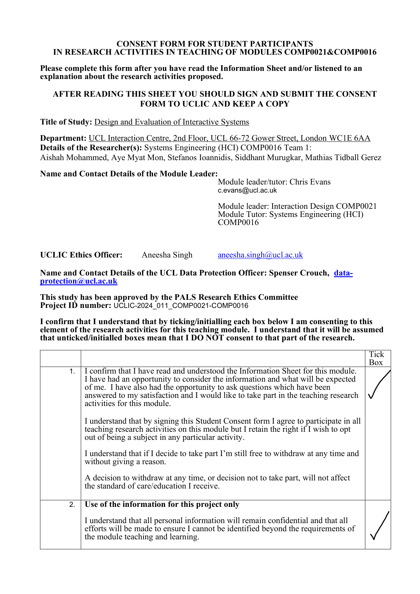
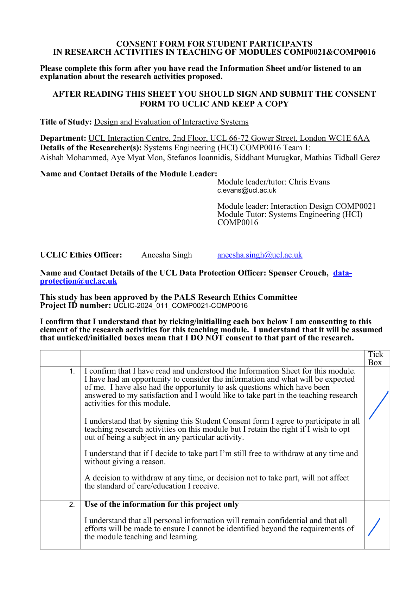

Research
Requirements Discovery
Before any technology decisions were made, we carried out structured requirements discovery to understand real user needs in an educational context. We reached teachers and IT administrators through our project supervisor, Prof. Mohamedally, who facilitated contact with relevant stakeholders. This ensured an authentic educational context while respecting access limitations in schools.
Research Method Flow
(Prof. Mohamedally)
via educational network
Privacy · Offline access · Budget constraints · Lightweight hardware
User Scenarios
Requirements
Cloud AI vs Local AI — Comparative Analysis
A key early research question was whether to build on cloud-based AI infrastructure or commit fully to local inference. The comparison below summarises why local AI was the only viable direction for a school-focused deployment.
| Factor | Cloud AI (e.g. ChatGPT, Copilot) | Local AI (SmolPC 2.0) |
|---|---|---|
| Internet required | Yes — constant connection needed | No — fully offline after setup |
| Data privacy | Student code sent to external servers — GDPR concern | 100% on-device, nothing leaves the machine |
| Cost | Subscription-based, per user | Free after initial setup |
| School suitability | Poor — requires accounts, internet, and cloud trust | High — works in any classroom environment |
| Hardware requirements | Low (cloud does the work) | Optimised for 4GB RAM+ budget mini PCs |
| Deployment | Account management per student | Single USB bundle, no admin rights needed |
HCI Evaluation — Heuristic Analysis
We applied Nielsen's usability heuristics to evaluate our prototype at two stages of development. Problems found in the initial prototype directly informed the design decisions in the final version.
| Heuristic | Problem in Initial Prototype | Solution in Final Prototype | Severity |
|---|---|---|---|
| Visibility of System Status | No indicator shown when the AI was processing or generating a response | Added a visible "Generating…" loading icon in the sidebar | 2 |
| Match Between System and the Real World | Prompts used technical jargon unfamiliar to student users | Replaced with plain, user-friendly language and icons | 2 |
| User Control and Freedom | AI output overwrote existing text with no undo option | Added confirmation before insertion and enabled undo/redo | 3 |
| Consistency and Standards | Cluttered layout with action buttons placed away from related content | Unified tab-based shell with consistent layout across all assistant modes | 2 |
| Recognition Rather Than Recall | Icon-only buttons with no labels — not intuitive for new users | Labelled controls and contextual help text added near the input bar | 2 |
Technology Review
The technology research evolved alongside the implementation. Early experiments prioritised rapid prototyping; later decisions prioritised packaging, Windows deployment, security, runtime ownership, and predictable local setup. The final architecture therefore reflects a series of deliberate pivots rather than one fixed plan from the start [4], [5], [12].
Inference Runtime Ownership
One of the most important technical pivots was how local inference should be owned. Early experimentation used Ollama because it made local prototyping quick, but a separate model server still introduces extra setup and makes it harder to present the system as one product. The final direction was therefore a shared SmolPC engine that owns startup, readiness, backend selection, inference, and model/runtime management for the whole suite, making a single packaged application more realistic [3], [5], [12].
| Option | Pros | Cons | Chosen |
|---|---|---|---|
| Cloud-hosted model APIs | High model capability and minimal local compute requirements | Internet dependency, privacy concerns, account dependency, and poor classroom deployability | No |
| Ollama as a separate local model server | Quick to prototype, simple localhost API, and useful for early local experimentation [3] | Still requires separate runtime management and weakens the single-installer deployment story | No |
| Shared SmolPC engine | One runtime lifecycle, shared model ownership, hardware-aware backend selection, and a better fit for unified deployment [5], [12] | Requires more up-front architecture and contract discipline | Yes |
Solution and Deployment Architecture
Three broad product shapes were considered. A cloud-first architecture was rejected early because it conflicted with the privacy and offline goals in the requirements. A collection of separate assistants worked well enough for prototyping, but it created repeated setup and a weaker deployment story. The final direction was a unified application with a shared local engine and mode-specific providers [4], [5], [12].
| Option | Pros | Cons | Chosen |
|---|---|---|---|
| Separate assistants with their own runtime and setup flows | Fast to prototype and easy to develop independently in the early phase | Repeated setup, fragmented UX, and more difficult packaging for end users | No |
| Unified SmolPC app with a shared engine and mode-specific providers | Shared model/runtime ownership, more consistent UX, reusable setup, and a clearer path to a single bundled product [5], [12] | More architectural complexity and stricter boundaries between app logic and inference ownership | Yes |
Device and Runtime Strategy
We deliberately moved away from framing the system around one fixed laptop specification. Local AI performance depends heavily on the hardware and drivers available on the machine, so the more realistic goal was to recognise the supported runtime path and use the best available local lane rather than promise identical behaviour everywhere. ONNX Runtime execution providers make this kind of backend selection practical, and OpenVINO provides a stronger path on supported Intel hardware [6], [7]. In the current codebase, the Windows runtime stack relies heavily on ONNX Runtime and ONNX Runtime GenAI, with the Rust ort crate used in the Tauri application and shared runtime-bundle management used in the engine to support DirectML-backed execution and dynamic runtime loading [4], [6].
| Option | Pros | Cons | Chosen |
|---|---|---|---|
| Optimise for one fixed target laptop profile | Simpler benchmarking and narrower tuning target | Too brittle for real deployment because hardware and driver state vary between machines | No |
| CPU-only local inference | Largest baseline compatibility and simplest fallback story | Lower performance and a weaker experience on machines that do have GPU or NPU acceleration | No |
| Hardware-aware local runtime selection | Can adapt to CPU, DirectML, or OpenVINO NPU support while preserving the offline goal [6], [7], [12] | More engineering complexity and no guarantee that every device will deliver the same performance | Yes |
Model Selection
This project does not train or evaluate a novel algorithm, so we do not include a separate Algorithms page. Instead, the research focus here is model, runtime, and architecture selection. In practice, the shared model strategy moved toward qwen3-4b as the main cross-mode baseline, while smaller models remained useful for lighter or more constrained flows [8].
| Option | Pros | Cons | Chosen |
|---|---|---|---|
qwen3-4b |
Stronger cross-mode baseline and better suited to a unified assistant platform [8] | Heavier artifacts, slower bring-up, and more sensitive to runtime constraints | Yes |
qwen2.5-1.5b-instruct |
Smaller footprint and useful for lighter-weight local flows or more constrained hardware [8] | Not strong enough as the single baseline across all assistant modes | Yes |
| Larger 7B+ local models as the default | Potentially stronger generation quality | Too heavy for the intended deployment story and harder to package for general classroom use | No |
Model Capabilities and Limitations
This summary is based only on official public model cards and upstream Qwen family documentation, not on SmolPC-specific benchmarking. It is intended as a conservative reader-facing guide to what the currently referenced models are generally best suited to, together with the main cautions the upstream sources already highlight [14]-[18].
| Model | Best suited to | Official cautions / less-suited cases | Source basis |
|---|---|---|---|
qwen3-4b |
Reasoning-heavy prompts, coding and maths help, multilingual interaction, and workflows that may benefit from tool or agent-style use. The official materials also emphasise its ability to switch between thinking and non-thinking modes depending on task difficulty. | The official model card warns that poor decoding settings, especially greedy decoding, can lead to degraded output quality and endless repetition. Its strengths are described at the family and model-card level, so this should be read as an upstream capability summary rather than a claim that it is always the best fit for every local deployment. | Official model card [15]; upstream family overview [17] |
qwen2.5-1.5b-instruct |
General instruction following, lighter coding and maths assistance, long-form responses, structured data understanding, and JSON-like structured output in more constrained local settings. | The official sources highlight improvements in these areas, but they do not publish a strong task-by-task limitation matrix for this 1.5B instruct checkpoint. For now, the cautious interpretation is that it is a smaller, lighter general model whose strengths are described more conservatively than the more heavily emphasised Qwen3 family reasoning story. | Official model card [14]; upstream family overview [16] |
whisper-base.en |
English speech recognition, including longer audio when used with chunking, where a compact local ASR model is more important than full multilingual coverage. | This checkpoint is English-only, may hallucinate text that was not actually spoken, can behave unevenly across accents, dialects, or lower-resource settings, and is explicitly not recommended for subjective classification or high-risk decision contexts. | Official model card [18] |
Note: these are upstream claims and cautions only. Project-specific benchmarking, runtime validation, and SmolPC mode-by-mode recommendations should be added separately once the team has completed its own testing.
Voice Interaction and Accessibility
As the unified shell matured, voice interaction became a practical accessibility improvement for SmolPC 2.0 as a whole, especially for users who may find typing difficult or prefer dictation. The key research question was not whether speech APIs existed, but how to add dictation and read-aloud without breaking the project's offline and single-product goals. The chosen direction keeps both speech-to-text and text-to-speech local, and exposes them through the same shared engine surface as the rest of the assistant platform [13].
| Option | Pros | Cons | Chosen |
|---|---|---|---|
| No voice features | Simplest product surface and no extra runtime components | Misses an accessibility opportunity and keeps the local assistant entirely keyboard-driven | No |
| Cloud speech-to-text and text-to-speech services | Quick to prototype and often high quality | Breaks offline use, weakens privacy guarantees, and adds service dependency | No |
| Local Whisper STT plus local TTS behind the shared engine | Preserves offline operation, fits the shared-engine contract, and improves accessibility inside the existing UI [13] | Adds packaging complexity and extra local runtime resources | Yes |
Research and implementation also ruled out a naive in-process TTS design. The final voice architecture keeps Whisper transcription inside the engine host, but isolates TTS in a separate sidecar because that was the safest way to avoid runtime conflicts with the main inference stack while still presenting one unified API to the app [13].
Desktop Application Stack
The move from the older prototype toward a Windows-first packaged desktop application made the application framework decision especially important. Tauri was chosen because it matched the project priorities around packaging, native backend control, and a lighter-weight desktop footprint while still allowing a modern web-based UI [9].
| Option | Pros | Cons | Chosen |
|---|---|---|---|
| Electron with TypeScript | Mature ecosystem and familiar web development workflow | Heavier desktop footprint and a weaker fit for the project’s lightweight packaging goals | No |
| Tauri with Rust backend and TypeScript frontend | Good fit for packaged desktop delivery, native backend control, and a reusable web UI [9] | More Rust-specific engineering effort and stricter integration boundaries | Yes |
| Python desktop application stack | Fast experimentation and strong AI tooling ecosystem | Weaker long-term fit for a bundled Windows-first desktop product with shared engine ownership | No |
Frontend Framework
Svelte was selected for the frontend because it fits well with Tauri and keeps the UI layer lightweight. Its compiler-first approach also aligns with the project’s preference for small, responsive desktop interfaces [10].
| Option | Pros | Cons | Chosen |
|---|---|---|---|
| Plain HTML, CSS, and JavaScript only | Minimal dependency footprint and full control over page structure | Harder to scale across a dynamic multi-mode desktop application | No |
| React | Large ecosystem and broad developer familiarity | More framework overhead than necessary for this project | No |
| Svelte | Compiler-based, concise components, and a lightweight UI layer that works well inside Tauri [10] | Smaller ecosystem than React and more team-specific learning upfront | Yes |
APIs and Integration Strategy
The final platform uses more than one kind of interface because the problem itself has multiple layers. Inference is owned by the shared engine through a typed client and localhost HTTP contract, while host applications are integrated through app-specific tool providers and host bridges, including GIMP MCP bridging and LibreOffice MCP-backed tooling where appropriate [5], [11], [12].
| Approach | Purpose | Pros | Cons | Decision |
|---|---|---|---|---|
| App-local inference inside each assistant | Let each assistant own its own model/runtime logic | Simpler for isolated early experiments | Duplicates runtime logic and weakens a unified deployment model | Rejected for the final architecture |
| Shared engine client plus localhost HTTP contract | Final inference ownership across assistant modes | One engine lifecycle, shared models, and a clear cross-app boundary [5], [12] | Requires more up-front architecture and contract discipline | Final inference path |
| App-specific host bridges and tool providers | Controlling external creative/productivity software | Structured access to host-app operations instead of fragile prompt-only interaction [2], [11] | Still depends on the host application being installed and reachable | Final host-app path |
Summary of Technical Decisions
| Component | Decision | Reason |
|---|---|---|
| Overall product shape | Unified multi-mode SmolPC application | Provided a more coherent UX and a stronger packaging story than separate assistants |
| Flagship workflow | Code mode as the core user-facing workflow | Made the platform identity clearer while still supporting other assistant workflows |
| Inference ownership | Shared local engine | Reduced duplicated runtime setup and enabled model reuse across modes |
| Runtime strategy | Hardware-aware local backend selection with fallbacks | Better matched real deployment variability than targeting one fixed machine profile |
| Primary model baseline | qwen3-4b |
Worked better as the main cross-mode baseline for the unified assistant platform |
| Smaller supporting model | qwen2.5-1.5b-instruct |
Retained for lighter-weight flows and more constrained runtime situations |
| Desktop framework | Tauri with Rust backend | Better aligned with Windows-first packaged delivery, native backend control, and a lighter desktop footprint |
| Frontend framework | Svelte | Kept the UI layer compact while still supporting a dynamic multi-mode interface |
| Host-application integration | App-specific host bridges and tool providers | Enabled structured control of GIMP, Blender, and LibreOffice workflows instead of plain chat alone |
| Voice input | Local Whisper speech-to-text through the shared engine | Added offline dictation without introducing cloud speech services |
| Voice output | Local TTS sidecar behind the engine API | Preserved a unified app contract while isolating TTS runtime concerns |
Ethical Approval & Consent Forms
As part of our HCI research process, we conducted pseudo-user testing with coursemates to evaluate our prototype before wider deployment. All participants provided informed consent prior to taking part. All forms were approved under UCL PALS Research Ethics Committee (Project ID: UCLIC-2024_011_COMP0021-COMP0016).
Participant 1

Participant 2

References
- [1] GitHub, “GitHub Copilot,” 2026. [Online]. Available: https://github.com/features/copilot. [Accessed: 23-Mar-2026].
- [2] maorcc, “gimp-mcp,” GitHub, 2026. [Online]. Available: https://github.com/maorcc/gimp-mcp. [Accessed: 23-Mar-2026].
- [3] Ollama, “Ollama,” 2026. [Online]. Available: https://ollama.com/. [Accessed: 23-Mar-2026].
- [4] SmolPC-2.0, “SmolPC Platform Monorepo,” GitHub, 2026. [Online]. Available: https://github.com/SmolPC-2-0/smolpc-codehelper. [Accessed: 23-Mar-2026].
- [5] SmolPC-2.0, “SmolPC Monorepo Architecture,” GitHub, 2026. [Online]. Available: https://github.com/SmolPC-2-0/smolpc-codehelper/blob/main/docs/ARCHITECTURE.md. [Accessed: 23-Mar-2026].
- [6] ONNX Runtime, “Execution Providers,” 2026. [Online]. Available: https://onnxruntime.ai/docs/execution-providers/. [Accessed: 23-Mar-2026].
- [7] Intel, “OpenVINO GenAI on NPU,” 2026. [Online]. Available: https://docs.openvino.ai/2026/openvino-workflow-generative/inference-with-genai/inference-with-genai-on-npu.html. [Accessed: 23-Mar-2026].
- [8] SmolPC-2.0, “Model Strategy,” GitHub, 2026. [Online]. Available: https://github.com/SmolPC-2-0/smolpc-codehelper/blob/main/docs/openvino-native-genai/MODEL_STRATEGY.md. [Accessed: 23-Mar-2026].
- [9] Tauri, “Tauri 2.0,” 2026. [Online]. Available: https://tauri.app/. [Accessed: 23-Mar-2026].
- [10] Svelte, “Svelte,” 2026. [Online]. Available: https://svelte.dev/. [Accessed: 23-Mar-2026].
- [11] Model Context Protocol, “What is the Model Context Protocol (MCP)?,” 2026. [Online]. Available: https://modelcontextprotocol.io/docs/getting-started/intro. [Accessed: 23-Mar-2026].
- [12] SmolPC-2.0, “Shared Engine Integration Notes,” GitHub, 2026. [Online]. Available: https://github.com/SmolPC-2-0/smolpc-codehelper/blob/main/docs/SMOLPC_SUITE_INTEGRATION.md. [Accessed: 23-Mar-2026].
- [13] SmolPC-2.0, “Voice I/O: Whisper STT + KittenTTS,” GitHub, 2026. [Online]. Available: https://github.com/SmolPC-2-0/smolpc-codehelper/blob/main/docs/superpowers/specs/2026-03-24-voice-io-design.md. [Accessed: 24-Mar-2026].
- [14] Qwen, “Qwen2.5-1.5B-Instruct,” Hugging Face, 2026. [Online]. Available: https://huggingface.co/Qwen/Qwen2.5-1.5B-Instruct. [Accessed: 27-Mar-2026].
- [15] Qwen, “Qwen3-4B,” Hugging Face, 2026. [Online]. Available: https://huggingface.co/Qwen/Qwen3-4B. [Accessed: 27-Mar-2026].
- [16] Qwen Team, “Qwen2.5: A Party of Foundation Models!,” 19-Sep-2024. [Online]. Available: https://qwenlm.github.io/blog/qwen2.5/. [Accessed: 27-Mar-2026].
- [17] Qwen Team, “Qwen3: Think Deeper, Act Faster,” 29-Apr-2025. [Online]. Available: https://qwenlm.github.io/blog/qwen3/. [Accessed: 27-Mar-2026].
- [18] OpenAI, “whisper-base.en,” Hugging Face, 2026. [Online]. Available: https://huggingface.co/openai/whisper-base.en. [Accessed: 27-Mar-2026].